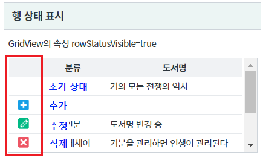
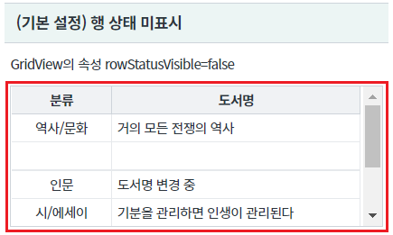
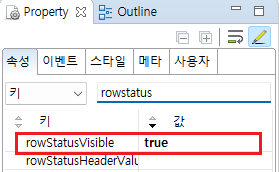

[GridView] 행 상태 표시하기
1개요
GridView의 행 상태를 표시하는 예제입니다. 이 기능은 속성 rowStatusVisible을 true로 설정하여 사용할 수 있습니다. 행 상태는 DataList의 컬럼 rowStatus에 할당 된 값에 따라 아이콘이 할당됩니다. R : 초기 상태, C : 추가, U : 수정, D : 삭제
2구현된 기능
행 상태 표시
행 상태 미표시
3예제 테스트 방법
3.1행 상태 표시
행의 상태별 아이콘을 확인하기 위해 화면 로딩 후 스크립트(행 추가, 행 삭제, 값 변경)가 작성되었습니다.
- 실행 결과를 확인합니다.
영역 [행 상태 표시]의 GridView를 확인합니다.
행 상태 컬럼이 표시됩니다.
[브라우저(Chrome) 실행 예시]

DataList [dlt_books_1]의 컬럼 [rowStatus]의 값에 따라 아이콘이 할당됩니다.
R : 초기 상태, C : 추가, U : 수정, D : 삭제
3.2행 상태 미표시
- 실행 결과를 확인합니다.
영역 [행 상태 미표시]의 GridView를 확인합니다.
행 상태가 표시되지 않습니다.
[브라우저(Chrome) 실행 예시]

4구현 예시
4.1행 상태 표시
STEP1. GridView의 속성을 정의합니다.
[필수] rowStatusVisible="true" //[default:false, true] 행 상태 컬럼 표시 여부
그림 1.웹스퀘어5 SP5 스튜디오의 Property View(속성창) 예시

[소스 코드 예시]
<!-- gridView 의 소스 본문 예시 --> <w2:gridView rowStatusVisible="true" dataList="data:dlt_books_1" style="height: 100px;"> <!-- 중략 --> </w2:gridView>
5주요 API
rowStatusVisible
6참고 문서
[웹스퀘어5 SP5 개발 가이드] GridView
링크 : https://docs1.inswave.com/sp5_user_guide/bc10c1b82c9a2a0b#e1c4658baf7e726f
[웹스퀘어5 SP5 개발 가이드] GridView 행 번호 및 행 상태
링크 : https://docs1.inswave.com/sp5_user_guide/86bdcf48029b958b#206ac331977998e6
[웹스퀘어5 SP5 개발 가이드] GridView 행 상태 표시 컬럼의 헤더 값과 폭 지정
링크 : https://docs1.inswave.com/sp5_user_guide/86bdcf48029b958b#25cdb0a4d6a12550
7참고 동영상
GridView 행 상태 표시 컬럼의 헤더 값과 폭 지정
링크 : https://youtu.be/hr7-xVWzIUU